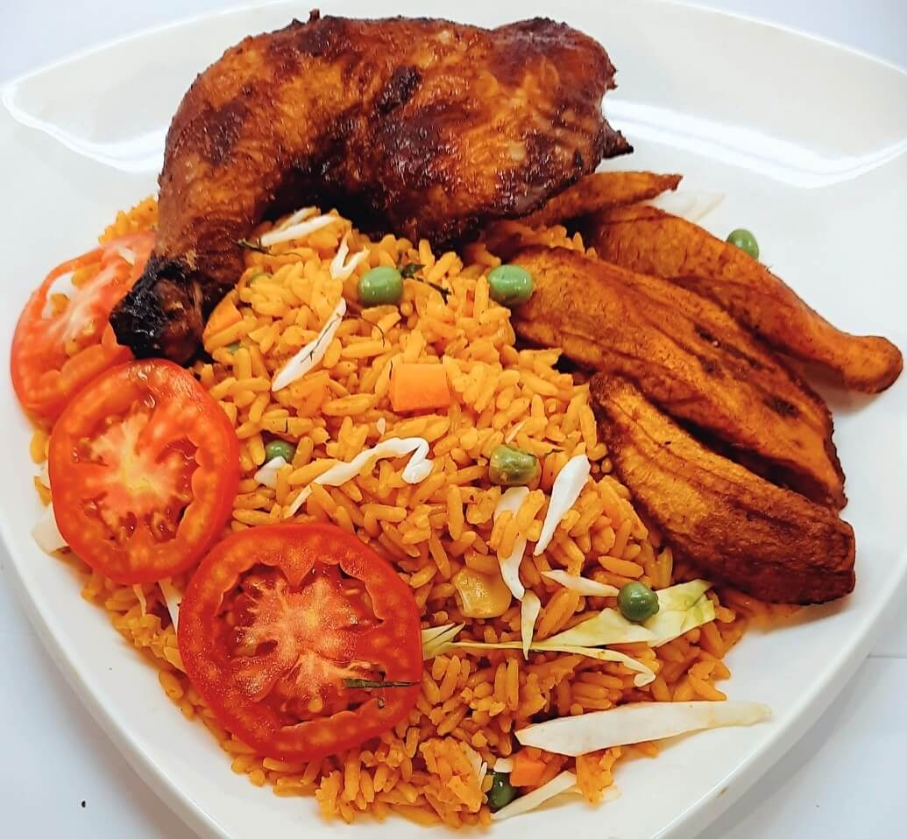

Jollof Rice Recipe

Description
Ingredients
- 1 tablespoon olive oil
- 1 large onion, sliced
- 2 (14.5 ounce) cans stewed tomatoes
- ½ (6 ounce) can tomato paste
- 1 teaspoon salt
- ¼ teaspoon black pepper
- ¼ teaspoon cayenne pepper
- ½ teaspoon red pepper flakes
- 1 tablespoon Worcestershire sauce
- 1 teaspoon chopped fresh rosemary
- 2 cups water
- 1 (3 pound) whole chicken, cut into 8 pieces
- 1 cup uncooked white rice
- 1 cup diced carrots
- ½ pound fresh green beans, trimmed and snapped into 1 to 2 inch pieces
- ¼ teaspoon ground nutmeg
Steps
- Place chicken drumsticks in a large Dutch oven over medium heat. Add 1/2 onion, ginger, crushed bouillon cubes, garlic, curry powder, 1 teaspoon herbes de Provence, black pepper, and cayenne pepper. Mix well. Cook until chicken starts sticking to the bottom, about 5 minutes. Pour in water, mix, cover the pot, and bring to a gentle simmer; cook for 15 minutes. Remove from heat.
- Transfer chicken to a baking dish using a slotted spoon. Strain cooking liquid through a fine-mesh sieve. Reserve 1 1/2 cups liquid. Discard solids.
- Preheat oven to 400 degrees F (200 degrees C).
- Bake chicken in the preheated oven until no longer pink in the middle and the juices run clear, about 30 minutes. An instant-read thermometer inserted into the thickest part should read 165 degrees F (74 degrees C).
- Heat 3 tablespoons vegetable oil in a large pot over medium-low heat and cook 1/2 onion until soft and translucent but not browned, about 5 minutes. Add tomato sauce; cook and stir until slightly thickened and infused into the oil, 5 to 7 minutes.